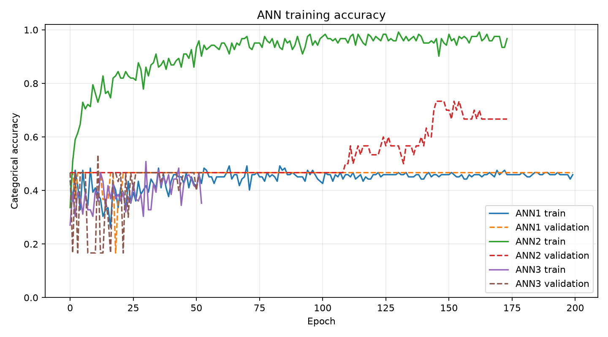
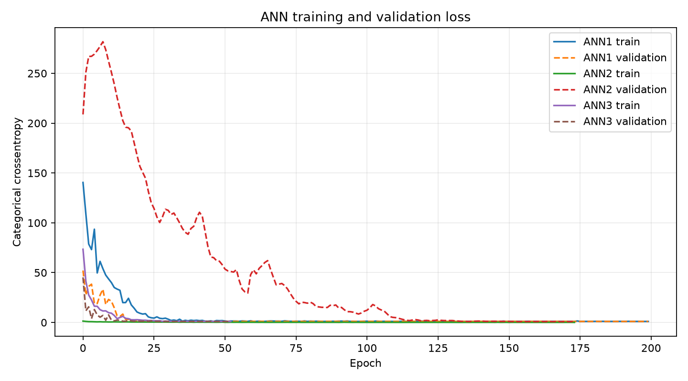
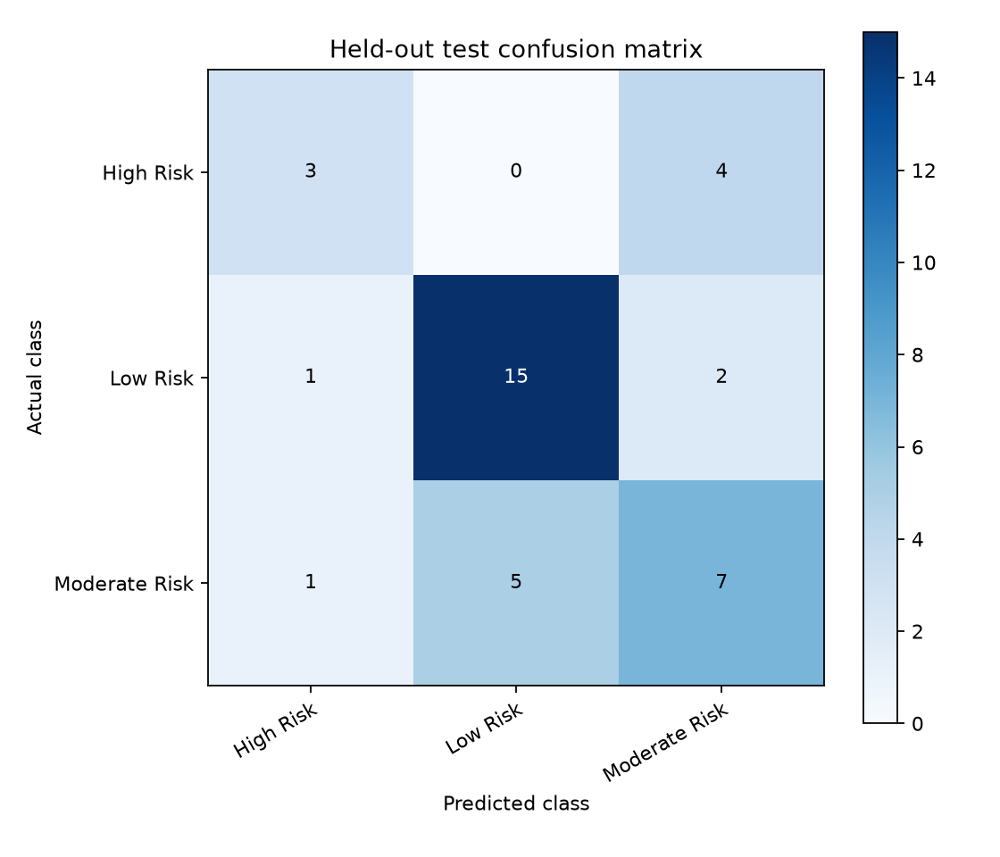
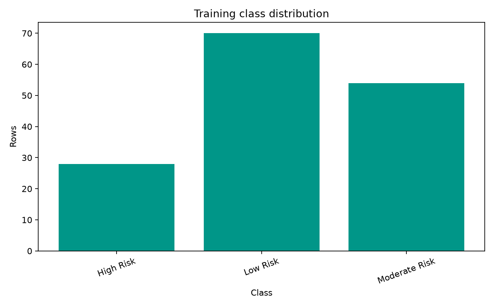
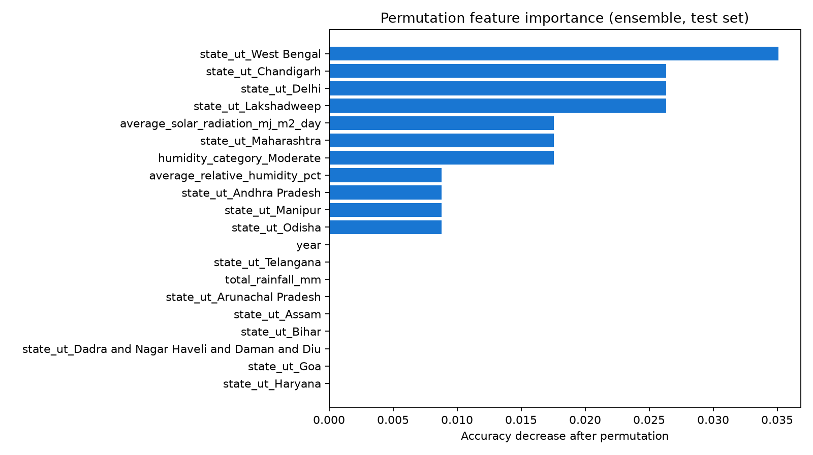

Generated UTC: 2026-10-02T10:49:59.353725+00:00
{
"train_path": "C:\\Users\\User\\OneDrive\\Desktop\\thanugowda\\main projrct\\7th sem project\\dengue\\backend\\app\\ml\\dataset\\processed\\train.csv",
"test_path": "C:\\Users\\User\\OneDrive\\Desktop\\thanugowda\\main projrct\\7th sem project\\dengue\\backend\\app\\ml\\dataset\\processed\\test.csv",
"training_rows": 152,
"test_rows": 38,
"feature_count": 48,
"feature_columns": [
"year",
"average_temperature_c",
"average_relative_humidity_pct",
"total_rainfall_mm",
"average_wind_speed_m_s",
"average_surface_pressure_kpa",
"average_solar_radiation_mj_m2_day",
"temperature_humidity_interaction",
"state_ut_Andaman and Nicobar Islands",
"state_ut_Andhra Pradesh",
"state_ut_Arunachal Pradesh",
"state_ut_Assam",
"state_ut_Bihar",
"state_ut_Chandigarh",
"state_ut_Chhattisgarh",
"state_ut_Dadra and Nagar Haveli and Daman and Diu",
"state_ut_Delhi",
"state_ut_Goa",
"state_ut_Gujarat",
"state_ut_Haryana",
"state_ut_Jammu and Kashmir",
"state_ut_Jharkhand",
"state_ut_Karnataka",
"state_ut_Kerala",
"state_ut_Lakshadweep",
"state_ut_Maharashtra",
"state_ut_Manipur",
"state_ut_Meghalaya",
"state_ut_Nagaland",
"state_ut_Odisha",
"state_ut_Puducherry",
"state_ut_Punjab",
"state_ut_Rajasthan",
"state_ut_Sikkim",
"state_ut_Tamil Nadu",
"state_ut_Telangana",
"state_ut_Tripura",
"state_ut_Uttar Pradesh",
"state_ut_Uttarakhand",
"state_ut_West Bengal",
"season_Annual",
"rainfall_category_High",
"rainfall_category_Low",
"rainfall_category_Moderate",
"humidity_category_High",
"humidity_category_Moderate",
"temperature_category_Cool",
"temperature_category_Moderate"
],
"target_column": "outbreak_risk",
"target_classes": [
"High Risk",
"Low Risk",
"Moderate Risk"
],
"training_class_distribution": {
"High Risk": 28,
"Low Risk": 70,
"Moderate Risk": 54
},
"test_class_distribution": {
"High Risk": 7,
"Low Risk": 18,
"Moderate Risk": 13
},
"scaler_loaded_from": "C:\\Users\\User\\OneDrive\\Desktop\\thanugowda\\main projrct\\7th sem project\\dengue\\backend\\app\\ml\\dataset\\processed\\scaler.pkl",
"scaler_input_feature_count": 47,
"note": "CSV features were preprocessed and scaled by the existing pipeline; values were not scaled a second time."
}{
"ANN1": "Dense(128, ReLU) -> Dropout(0.30) -> Dense(64, ReLU) -> Dropout(0.20) -> Dense(softmax)",
"ANN2": "Dense(256, ReLU) -> BatchNormalization -> Dropout(0.40) -> Dense(128, ReLU) -> Dropout(0.30) -> Dense(softmax)",
"ANN3": "Dense(64, ReLU) -> Dense(64, ReLU) -> Dropout(0.25) -> Dense(32, ReLU) -> Dense(softmax)",
"Ensemble": "Arithmetic mean of ANN1, ANN2, ANN3 softmax probabilities",
"model_summaries": {
"ANN1": "Model: \"ann1\"\n\u250f\u2501\u2501\u2501\u2501\u2501\u2501\u2501\u2501\u2501\u2501\u2501\u2501\u2501\u2501\u2501\u2501\u2501\u2501\u2501\u2501\u2501\u2501\u2501\u2501\u2501\u2501\u2501\u2533\u2501\u2501\u2501\u2501\u2501\u2501\u2501\u2501\u2501\u2501\u2501\u2501\u2501\u2501\u2501\u2501\u2501\u2501\u2501\u2501\u2501\u2533\u2501\u2501\u2501\u2501\u2501\u2501\u2501\u2501\u2501\u2501\u2501\u2501\u2513\n\u2503 Layer (type) \u2503 Output Shape \u2503 Param # \u2503\n\u2521\u2501\u2501\u2501\u2501\u2501\u2501\u2501\u2501\u2501\u2501\u2501\u2501\u2501\u2501\u2501\u2501\u2501\u2501\u2501\u2501\u2501\u2501\u2501\u2501\u2501\u2501\u2501\u2547\u2501\u2501\u2501\u2501\u2501\u2501\u2501\u2501\u2501\u2501\u2501\u2501\u2501\u2501\u2501\u2501\u2501\u2501\u2501\u2501\u2501\u2547\u2501\u2501\u2501\u2501\u2501\u2501\u2501\u2501\u2501\u2501\u2501\u2501\u2529\n\u2502 features (InputLayer) \u2502 (None, 48) \u2502 0 \u2502\n\u251c\u2500\u2500\u2500\u2500\u2500\u2500\u2500\u2500\u2500\u2500\u2500\u2500\u2500\u2500\u2500\u2500\u2500\u2500\u2500\u2500\u2500\u2500\u2500\u2500\u2500\u2500\u2500\u253c\u2500\u2500\u2500\u2500\u2500\u2500\u2500\u2500\u2500\u2500\u2500\u2500\u2500\u2500\u2500\u2500\u2500\u2500\u2500\u2500\u2500\u253c\u2500\u2500\u2500\u2500\u2500\u2500\u2500\u2500\u2500\u2500\u2500\u2500\u2524\n\u2502 dense_128 (Dense) \u2502 (None, 128) \u2502 6,272 \u2502\n\u251c\u2500\u2500\u2500\u2500\u2500\u2500\u2500\u2500\u2500\u2500\u2500\u2500\u2500\u2500\u2500\u2500\u2500\u2500\u2500\u2500\u2500\u2500\u2500\u2500\u2500\u2500\u2500\u253c\u2500\u2500\u2500\u2500\u2500\u2500\u2500\u2500\u2500\u2500\u2500\u2500\u2500\u2500\u2500\u2500\u2500\u2500\u2500\u2500\u2500\u253c\u2500\u2500\u2500\u2500\u2500\u2500\u2500\u2500\u2500\u2500\u2500\u2500\u2524\n\u2502 dropout_030 (Dropout) \u2502 (None, 128) \u2502 0 \u2502\n\u251c\u2500\u2500\u2500\u2500\u2500\u2500\u2500\u2500\u2500\u2500\u2500\u2500\u2500\u2500\u2500\u2500\u2500\u2500\u2500\u2500\u2500\u2500\u2500\u2500\u2500\u2500\u2500\u253c\u2500\u2500\u2500\u2500\u2500\u2500\u2500\u2500\u2500\u2500\u2500\u2500\u2500\u2500\u2500\u2500\u2500\u2500\u2500\u2500\u2500\u253c\u2500\u2500\u2500\u2500\u2500\u2500\u2500\u2500\u2500\u2500\u2500\u2500\u2524\n\u2502 dense_64 (Dense) \u2502 (None, 64) \u2502 8,256 \u2502\n\u251c\u2500\u2500\u2500\u2500\u2500\u2500\u2500\u2500\u2500\u2500\u2500\u2500\u2500\u2500\u2500\u2500\u2500\u2500\u2500\u2500\u2500\u2500\u2500\u2500\u2500\u2500\u2500\u253c\u2500\u2500\u2500\u2500\u2500\u2500\u2500\u2500\u2500\u2500\u2500\u2500\u2500\u2500\u2500\u2500\u2500\u2500\u2500\u2500\u2500\u253c\u2500\u2500\u2500\u2500\u2500\u2500\u2500\u2500\u2500\u2500\u2500\u2500\u2524\n\u2502 dropout_020 (Dropout) \u2502 (None, 64) \u2502 0 \u2502\n\u251c\u2500\u2500\u2500\u2500\u2500\u2500\u2500\u2500\u2500\u2500\u2500\u2500\u2500\u2500\u2500\u2500\u2500\u2500\u2500\u2500\u2500\u2500\u2500\u2500\u2500\u2500\u2500\u253c\u2500\u2500\u2500\u2500\u2500\u2500\u2500\u2500\u2500\u2500\u2500\u2500\u2500\u2500\u2500\u2500\u2500\u2500\u2500\u2500\u2500\u253c\u2500\u2500\u2500\u2500\u2500\u2500\u2500\u2500\u2500\u2500\u2500\u2500\u2524\n\u2502 class_probabilities \u2502 (None, 3) \u2502 195 \u2502\n\u2502 (Dense) \u2502 \u2502 \u2502\n\u2514\u2500\u2500\u2500\u2500\u2500\u2500\u2500\u2500\u2500\u2500\u2500\u2500\u2500\u2500\u2500\u2500\u2500\u2500\u2500\u2500\u2500\u2500\u2500\u2500\u2500\u2500\u2500\u2534\u2500\u2500\u2500\u2500\u2500\u2500\u2500\u2500\u2500\u2500\u2500\u2500\u2500\u2500\u2500\u2500\u2500\u2500\u2500\u2500\u2500\u2534\u2500\u2500\u2500\u2500\u2500\u2500\u2500\u2500\u2500\u2500\u2500\u2500\u2518\n Total params: 14,723 (57.51 KB)\n Trainable params: 14,723 (57.51 KB)\n Non-trainable params: 0 (0.00 B)\n",
"ANN2": "Model: \"ann2\"\n\u250f\u2501\u2501\u2501\u2501\u2501\u2501\u2501\u2501\u2501\u2501\u2501\u2501\u2501\u2501\u2501\u2501\u2501\u2501\u2501\u2501\u2501\u2501\u2501\u2501\u2501\u2501\u2501\u2533\u2501\u2501\u2501\u2501\u2501\u2501\u2501\u2501\u2501\u2501\u2501\u2501\u2501\u2501\u2501\u2501\u2501\u2501\u2501\u2501\u2501\u2533\u2501\u2501\u2501\u2501\u2501\u2501\u2501\u2501\u2501\u2501\u2501\u2501\u2513\n\u2503 Layer (type) \u2503 Output Shape \u2503 Param # \u2503\n\u2521\u2501\u2501\u2501\u2501\u2501\u2501\u2501\u2501\u2501\u2501\u2501\u2501\u2501\u2501\u2501\u2501\u2501\u2501\u2501\u2501\u2501\u2501\u2501\u2501\u2501\u2501\u2501\u2547\u2501\u2501\u2501\u2501\u2501\u2501\u2501\u2501\u2501\u2501\u2501\u2501\u2501\u2501\u2501\u2501\u2501\u2501\u2501\u2501\u2501\u2547\u2501\u2501\u2501\u2501\u2501\u2501\u2501\u2501\u2501\u2501\u2501\u2501\u2529\n\u2502 features (InputLayer) \u2502 (None, 48) \u2502 0 \u2502\n\u251c\u2500\u2500\u2500\u2500\u2500\u2500\u2500\u2500\u2500\u2500\u2500\u2500\u2500\u2500\u2500\u2500\u2500\u2500\u2500\u2500\u2500\u2500\u2500\u2500\u2500\u2500\u2500\u253c\u2500\u2500\u2500\u2500\u2500\u2500\u2500\u2500\u2500\u2500\u2500\u2500\u2500\u2500\u2500\u2500\u2500\u2500\u2500\u2500\u2500\u253c\u2500\u2500\u2500\u2500\u2500\u2500\u2500\u2500\u2500\u2500\u2500\u2500\u2524\n\u2502 dense_256 (Dense) \u2502 (None, 256) \u2502 12,544 \u2502\n\u251c\u2500\u2500\u2500\u2500\u2500\u2500\u2500\u2500\u2500\u2500\u2500\u2500\u2500\u2500\u2500\u2500\u2500\u2500\u2500\u2500\u2500\u2500\u2500\u2500\u2500\u2500\u2500\u253c\u2500\u2500\u2500\u2500\u2500\u2500\u2500\u2500\u2500\u2500\u2500\u2500\u2500\u2500\u2500\u2500\u2500\u2500\u2500\u2500\u2500\u253c\u2500\u2500\u2500\u2500\u2500\u2500\u2500\u2500\u2500\u2500\u2500\u2500\u2524\n\u2502 batch_normalization \u2502 (None, 256) \u2502 1,024 \u2502\n\u2502 (BatchNormalization) \u2502 \u2502 \u2502\n\u251c\u2500\u2500\u2500\u2500\u2500\u2500\u2500\u2500\u2500\u2500\u2500\u2500\u2500\u2500\u2500\u2500\u2500\u2500\u2500\u2500\u2500\u2500\u2500\u2500\u2500\u2500\u2500\u253c\u2500\u2500\u2500\u2500\u2500\u2500\u2500\u2500\u2500\u2500\u2500\u2500\u2500\u2500\u2500\u2500\u2500\u2500\u2500\u2500\u2500\u253c\u2500\u2500\u2500\u2500\u2500\u2500\u2500\u2500\u2500\u2500\u2500\u2500\u2524\n\u2502 dropout_040 (Dropout) \u2502 (None, 256) \u2502 0 \u2502\n\u251c\u2500\u2500\u2500\u2500\u2500\u2500\u2500\u2500\u2500\u2500\u2500\u2500\u2500\u2500\u2500\u2500\u2500\u2500\u2500\u2500\u2500\u2500\u2500\u2500\u2500\u2500\u2500\u253c\u2500\u2500\u2500\u2500\u2500\u2500\u2500\u2500\u2500\u2500\u2500\u2500\u2500\u2500\u2500\u2500\u2500\u2500\u2500\u2500\u2500\u253c\u2500\u2500\u2500\u2500\u2500\u2500\u2500\u2500\u2500\u2500\u2500\u2500\u2524\n\u2502 dense_128 (Dense) \u2502 (None, 128) \u2502 32,896 \u2502\n\u251c\u2500\u2500\u2500\u2500\u2500\u2500\u2500\u2500\u2500\u2500\u2500\u2500\u2500\u2500\u2500\u2500\u2500\u2500\u2500\u2500\u2500\u2500\u2500\u2500\u2500\u2500\u2500\u253c\u2500\u2500\u2500\u2500\u2500\u2500\u2500\u2500\u2500\u2500\u2500\u2500\u2500\u2500\u2500\u2500\u2500\u2500\u2500\u2500\u2500\u253c\u2500\u2500\u2500\u2500\u2500\u2500\u2500\u2500\u2500\u2500\u2500\u2500\u2524\n\u2502 dropout_030 (Dropout) \u2502 (None, 128) \u2502 0 \u2502\n\u251c\u2500\u2500\u2500\u2500\u2500\u2500\u2500\u2500\u2500\u2500\u2500\u2500\u2500\u2500\u2500\u2500\u2500\u2500\u2500\u2500\u2500\u2500\u2500\u2500\u2500\u2500\u2500\u253c\u2500\u2500\u2500\u2500\u2500\u2500\u2500\u2500\u2500\u2500\u2500\u2500\u2500\u2500\u2500\u2500\u2500\u2500\u2500\u2500\u2500\u253c\u2500\u2500\u2500\u2500\u2500\u2500\u2500\u2500\u2500\u2500\u2500\u2500\u2524\n\u2502 class_probabilities \u2502 (None, 3) \u2502 387 \u2502\n\u2502 (Dense) \u2502 \u2502 \u2502\n\u2514\u2500\u2500\u2500\u2500\u2500\u2500\u2500\u2500\u2500\u2500\u2500\u2500\u2500\u2500\u2500\u2500\u2500\u2500\u2500\u2500\u2500\u2500\u2500\u2500\u2500\u2500\u2500\u2534\u2500\u2500\u2500\u2500\u2500\u2500\u2500\u2500\u2500\u2500\u2500\u2500\u2500\u2500\u2500\u2500\u2500\u2500\u2500\u2500\u2500\u2534\u2500\u2500\u2500\u2500\u2500\u2500\u2500\u2500\u2500\u2500\u2500\u2500\u2518\n Total params: 46,851 (183.01 KB)\n Trainable params: 46,339 (181.01 KB)\n Non-trainable params: 512 (2.00 KB)\n",
"ANN3": "Model: \"ann3\"\n\u250f\u2501\u2501\u2501\u2501\u2501\u2501\u2501\u2501\u2501\u2501\u2501\u2501\u2501\u2501\u2501\u2501\u2501\u2501\u2501\u2501\u2501\u2501\u2501\u2501\u2501\u2501\u2501\u2533\u2501\u2501\u2501\u2501\u2501\u2501\u2501\u2501\u2501\u2501\u2501\u2501\u2501\u2501\u2501\u2501\u2501\u2501\u2501\u2501\u2501\u2533\u2501\u2501\u2501\u2501\u2501\u2501\u2501\u2501\u2501\u2501\u2501\u2501\u2513\n\u2503 Layer (type) \u2503 Output Shape \u2503 Param # \u2503\n\u2521\u2501\u2501\u2501\u2501\u2501\u2501\u2501\u2501\u2501\u2501\u2501\u2501\u2501\u2501\u2501\u2501\u2501\u2501\u2501\u2501\u2501\u2501\u2501\u2501\u2501\u2501\u2501\u2547\u2501\u2501\u2501\u2501\u2501\u2501\u2501\u2501\u2501\u2501\u2501\u2501\u2501\u2501\u2501\u2501\u2501\u2501\u2501\u2501\u2501\u2547\u2501\u2501\u2501\u2501\u2501\u2501\u2501\u2501\u2501\u2501\u2501\u2501\u2529\n\u2502 features (InputLayer) \u2502 (None, 48) \u2502 0 \u2502\n\u251c\u2500\u2500\u2500\u2500\u2500\u2500\u2500\u2500\u2500\u2500\u2500\u2500\u2500\u2500\u2500\u2500\u2500\u2500\u2500\u2500\u2500\u2500\u2500\u2500\u2500\u2500\u2500\u253c\u2500\u2500\u2500\u2500\u2500\u2500\u2500\u2500\u2500\u2500\u2500\u2500\u2500\u2500\u2500\u2500\u2500\u2500\u2500\u2500\u2500\u253c\u2500\u2500\u2500\u2500\u2500\u2500\u2500\u2500\u2500\u2500\u2500\u2500\u2524\n\u2502 dense_64_a (Dense) \u2502 (None, 64) \u2502 3,136 \u2502\n\u251c\u2500\u2500\u2500\u2500\u2500\u2500\u2500\u2500\u2500\u2500\u2500\u2500\u2500\u2500\u2500\u2500\u2500\u2500\u2500\u2500\u2500\u2500\u2500\u2500\u2500\u2500\u2500\u253c\u2500\u2500\u2500\u2500\u2500\u2500\u2500\u2500\u2500\u2500\u2500\u2500\u2500\u2500\u2500\u2500\u2500\u2500\u2500\u2500\u2500\u253c\u2500\u2500\u2500\u2500\u2500\u2500\u2500\u2500\u2500\u2500\u2500\u2500\u2524\n\u2502 dense_64_b (Dense) \u2502 (None, 64) \u2502 4,160 \u2502\n\u251c\u2500\u2500\u2500\u2500\u2500\u2500\u2500\u2500\u2500\u2500\u2500\u2500\u2500\u2500\u2500\u2500\u2500\u2500\u2500\u2500\u2500\u2500\u2500\u2500\u2500\u2500\u2500\u253c\u2500\u2500\u2500\u2500\u2500\u2500\u2500\u2500\u2500\u2500\u2500\u2500\u2500\u2500\u2500\u2500\u2500\u2500\u2500\u2500\u2500\u253c\u2500\u2500\u2500\u2500\u2500\u2500\u2500\u2500\u2500\u2500\u2500\u2500\u2524\n\u2502 dropout_025 (Dropout) \u2502 (None, 64) \u2502 0 \u2502\n\u251c\u2500\u2500\u2500\u2500\u2500\u2500\u2500\u2500\u2500\u2500\u2500\u2500\u2500\u2500\u2500\u2500\u2500\u2500\u2500\u2500\u2500\u2500\u2500\u2500\u2500\u2500\u2500\u253c\u2500\u2500\u2500\u2500\u2500\u2500\u2500\u2500\u2500\u2500\u2500\u2500\u2500\u2500\u2500\u2500\u2500\u2500\u2500\u2500\u2500\u253c\u2500\u2500\u2500\u2500\u2500\u2500\u2500\u2500\u2500\u2500\u2500\u2500\u2524\n\u2502 dense_32 (Dense) \u2502 (None, 32) \u2502 2,080 \u2502\n\u251c\u2500\u2500\u2500\u2500\u2500\u2500\u2500\u2500\u2500\u2500\u2500\u2500\u2500\u2500\u2500\u2500\u2500\u2500\u2500\u2500\u2500\u2500\u2500\u2500\u2500\u2500\u2500\u253c\u2500\u2500\u2500\u2500\u2500\u2500\u2500\u2500\u2500\u2500\u2500\u2500\u2500\u2500\u2500\u2500\u2500\u2500\u2500\u2500\u2500\u253c\u2500\u2500\u2500\u2500\u2500\u2500\u2500\u2500\u2500\u2500\u2500\u2500\u2524\n\u2502 class_probabilities \u2502 (None, 3) \u2502 99 \u2502\n\u2502 (Dense) \u2502 \u2502 \u2502\n\u2514\u2500\u2500\u2500\u2500\u2500\u2500\u2500\u2500\u2500\u2500\u2500\u2500\u2500\u2500\u2500\u2500\u2500\u2500\u2500\u2500\u2500\u2500\u2500\u2500\u2500\u2500\u2500\u2534\u2500\u2500\u2500\u2500\u2500\u2500\u2500\u2500\u2500\u2500\u2500\u2500\u2500\u2500\u2500\u2500\u2500\u2500\u2500\u2500\u2500\u2534\u2500\u2500\u2500\u2500\u2500\u2500\u2500\u2500\u2500\u2500\u2500\u2500\u2518\n Total params: 9,475 (37.01 KB)\n Trainable params: 9,475 (37.01 KB)\n Non-trainable params: 0 (0.00 B)\n"
}
}{
"max_epochs": 200,
"batch_size": 12,
"validation_split": 0.1974,
"validation_rows": 30,
"early_stopping_patience": 18,
"reduce_lr_patience": 7,
"optimizer": "Adam",
"loss": "categorical_crossentropy",
"seed": 42
}{
"ANN1": 75.933,
"ANN2": 60.153,
"ANN3": 15.824
}| Model | Accuracy | Precision (macro) | Recall (macro) | F1 (macro) |
|---|---|---|---|---|
| ANN1 | 0.4737 | 0.1579 | 0.3333 | 0.2143 |
| ANN2 | 0.7368 | 0.6989 | 0.6990 | 0.6984 |
| ANN3 | 0.4737 | 0.1579 | 0.3333 | 0.2143 |
| Ensemble | 0.6579 | 0.6295 | 0.6001 | 0.6093 |
{
"ANN1": {
"High Risk": {
"precision": 0.0,
"recall": 0.0,
"f1-score": 0.0,
"support": 7.0
},
"Low Risk": {
"precision": 0.47368421052631576,
"recall": 1.0,
"f1-score": 0.6428571428571429,
"support": 18.0
},
"Moderate Risk": {
"precision": 0.0,
"recall": 0.0,
"f1-score": 0.0,
"support": 13.0
},
"accuracy": 0.47368421052631576,
"macro avg": {
"precision": 0.15789473684210525,
"recall": 0.3333333333333333,
"f1-score": 0.2142857142857143,
"support": 38.0
},
"weighted avg": {
"precision": 0.22437673130193903,
"recall": 0.47368421052631576,
"f1-score": 0.3045112781954888,
"support": 38.0
}
},
"ANN2": {
"High Risk": {
"precision": 0.5714285714285714,
"recall": 0.5714285714285714,
"f1-score": 0.5714285714285714,
"support": 7.0
},
"Low Risk": {
"precision": 0.8823529411764706,
"recall": 0.8333333333333334,
"f1-score": 0.8571428571428571,
"support": 18.0
},
"Moderate Risk": {
"precision": 0.6428571428571429,
"recall": 0.6923076923076923,
"f1-score": 0.6666666666666666,
"support": 13.0
},
"accuracy": 0.7368421052631579,
"macro avg": {
"precision": 0.6988795518207284,
"recall": 0.6990231990231989,
"f1-score": 0.6984126984126983,
"support": 38.0
},
"weighted avg": {
"precision": 0.7431446262715613,
"recall": 0.7368421052631579,
"f1-score": 0.7393483709273183,
"support": 38.0
}
},
"ANN3": {
"High Risk": {
"precision": 0.0,
"recall": 0.0,
"f1-score": 0.0,
"support": 7.0
},
"Low Risk": {
"precision": 0.47368421052631576,
"recall": 1.0,
"f1-score": 0.6428571428571429,
"support": 18.0
},
"Moderate Risk": {
"precision": 0.0,
"recall": 0.0,
"f1-score": 0.0,
"support": 13.0
},
"accuracy": 0.47368421052631576,
"macro avg": {
"precision": 0.15789473684210525,
"recall": 0.3333333333333333,
"f1-score": 0.2142857142857143,
"support": 38.0
},
"weighted avg": {
"precision": 0.22437673130193903,
"recall": 0.47368421052631576,
"f1-score": 0.3045112781954888,
"support": 38.0
}
},
"Ensemble": {
"High Risk": {
"precision": 0.6,
"recall": 0.42857142857142855,
"f1-score": 0.5,
"support": 7.0
},
"Low Risk": {
"precision": 0.75,
"recall": 0.8333333333333334,
"f1-score": 0.7894736842105263,
"support": 18.0
},
"Moderate Risk": {
"precision": 0.5384615384615384,
"recall": 0.5384615384615384,
"f1-score": 0.5384615384615384,
"support": 13.0
},
"accuracy": 0.6578947368421053,
"macro avg": {
"precision": 0.6294871794871795,
"recall": 0.6001221001221001,
"f1-score": 0.6093117408906883,
"support": 38.0
},
"weighted avg": {
"precision": 0.65,
"recall": 0.6578947368421053,
"f1-score": 0.6502770083102493,
"support": 38.0
}
}
}




Open the test evaluation report. It evaluates the saved ensemble without retraining.